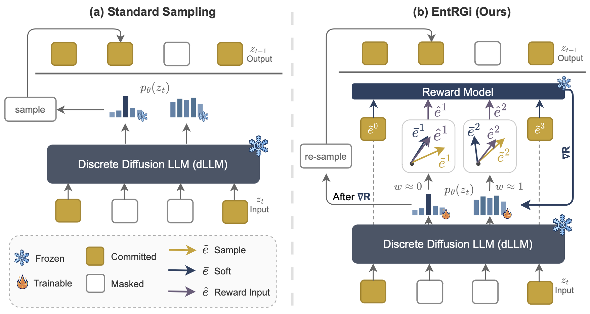

Reward guidance has been applied to great success in the test-time adaptation of continuous diffusion models; it updates each denoising step using the gradients from a downstream reward model. We study reward guidance for discrete diffusion language models, where one cannot differentiate through the natural outputs of the model because they are discrete tokens.
Existing approaches either replace these discrete tokens with continuous relaxations, or employ techniques like the straight-through estimator. In this work, we show the downsides of both these methods. The former degrades gradient feedback because the reward model has never been trained with continuous inputs. The latter involves incorrect optimization because the gradient evaluated at discrete tokens is used to update continuous logits.
Our key innovation is to go beyond this tradeoff by introducing EntRGi: Entropy aware Reward Guidance that dynamically regulates the gradients from the reward model. By modulating the continuous relaxation using the model's confidence, our approach substantially improves reward guidance while providing reliable inputs to the reward model.
EntRGi interpolates between soft embeddings and hard tokens based on entropy: lower entropy emphasizes continuous relaxation for gradient accuracy, while higher entropy relies on hard tokens via STE for reward model reliability. This adaptive weighting resolves the fundamental tension in gradient-based steering of discrete diffusion models.

Qualitative comparisons showing outputs from the baseline dLLM versus EntRGi-guided generation.
EntRGi evaluated on Dream-v0-Instruct-7B with Skywork-Reward-v2-Qwen3-1.7B at τ=0.7.
@article{tejaswi2026entrgi,
title = {EntRGi: Entropy Aware Reward Guidance for Diffusion Language Models},
author = {Tejaswi, Atula and Rout, Litu and Caramanis, Constantine and
Shakkottai, Sanjay and Sanghavi, Sujay},
journal = {arXiv preprint arXiv:XXXX.XXXXX},
year = {2026}
}